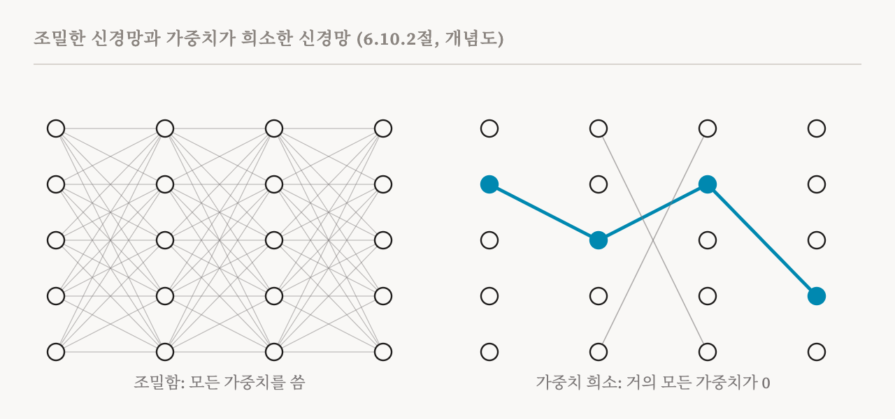
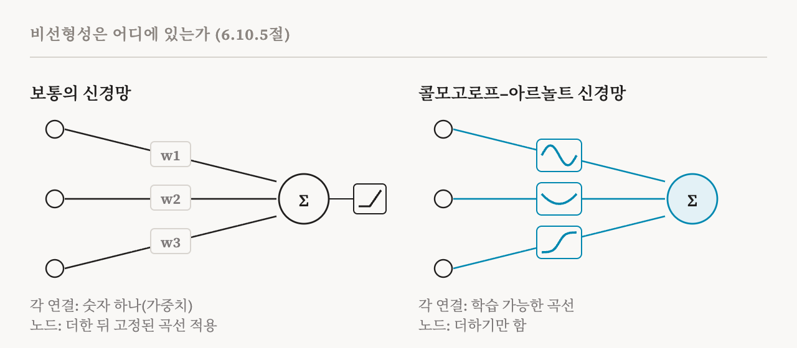

10편부터 14편까지의 방법에는 공통된 전제가 하나 있습니다. 학습된 모델의 표현은 너무 엉켜 있어서 바로 읽을 수 없으니, 더 단순한 단위를 되찾으려면 나중에 해석을 적용해야 한다는 것입니다. 이번 편은 이 전제를 뒤집는 연구 프로그램을 다루는 이 책의 6.10절(50–53쪽)을 다룹니다. 깊은 신경망을 처음부터 기계적으로 해석할 수 있도록 설계할 수 있는지 묻는 연구입니다. 8편에서 이 생각을 짧게 소개했습니다. 중첩은 보통의 구조가 허용하기 때문에 생기므로, 구조를 바꿔 중첩을 억제할 수 있다는 것입니다.
이 책은 먼저 중요한 관점 하나를 밝힙니다. 해석 가능성은 '된다, 안 된다'의 성질이 아니라 스펙트럼이라는 것입니다. 적어도 지금 형태로는, 이 설계들 가운데 어느 것도 모델의 계산을 완전히, 곧바로 이해할 수 있게 만들지 못합니다. 이 설계들이 하는 일은 모델을 분석하기 쉽게 만들고, SAE 같은 사후 근사보다 원래 계산을 더 많이 보존한 채로 분석할 수 있게 하는 것입니다.
이 책은 다섯 가지 접근을 설명합니다. 세 가지는 서로 다른 수준에서 희소성을 강제합니다. 특징, 가중치, 어텐션입니다. 나머지 두 가지는 계산의 기본 벽돌 자체를 바꿉니다.
특징의 희소성: SoLU
2022년의 소프트맥스 선형 단위(softmax linear unit, SoLU)는 초기의 시도였습니다. SoLU는 MLP에 쓰는 활성화 함수로, 각 뉴런의 값에 층 안의 모든 뉴런에 걸쳐 계산한 소프트맥스를 곱합니다. 소프트맥스는 뉴런들을 경쟁하게 만듭니다. 한 뉴런이 큰 값을 받으면 다른 뉴런들은 눌립니다. 신경과학자들은 뇌에서 일어나는 비슷한 효과를 측면 억제(lateral inhibition)라고 부릅니다. 이런 경쟁 덕분에 일부 뉴런이 전문화되어 두드러지게 되고, 실제로 SoLU는 사람이 읽을 수 있는 개념에 맞는 단의적 뉴런의 비율을 높였습니다.
하지만 반갑지 않은 것도 보여 주었습니다. 작은 값으로 눌린 뉴런들은 여전히 다의적이었고, 많은 특징이 그 안에 채워져 있었습니다. 그리고 뒤따르는 층 정규화가 그 값을 다시 키워서 다의성을 되살릴 수 있었습니다. 이 책은 이를 밀반입(smuggling)이라고 부릅니다. 신경망의 한 부분에 제약을 거는 것만으로는, 중첩으로 정보를 압축하려는 신경망의 유인을 없애지 못할 수 있다는 뜻입니다. 중첩이 다른 곳으로 옮겨 갈 뿐입니다. 그래서 다음에 볼 방법처럼 신경망 전체에 작용하는 제약이 필요해집니다.
가중치의 희소성
2026년의 한 연구가 만든 가중치 희소 트랜스포머(weight-sparse transformer)는 희소성을 가중치 자체에 대한 구조적 규칙으로 삼습니다. 학습 단계가 끝날 때마다 가중치 행렬마다 크기가 가장 큰 가중치들만 남기고 나머지는 정확히 0으로 만듭니다. 0이 아니어도 되는 가중치의 수는 '전부'에서 시작해 학습 동안 목표치까지 점점 줄어듭니다. 완성된 모델은 가중치 대부분이 정확히 0이어서, 남은 계산을 특정 과제를 위한 작은 회로들로 나누기가 훨씬 쉽습니다.

이득은 클 수 있습니다. 켜진 가중치가 1%도 안 되는 아주 희소한 설정에서는 각 뉴런이 훨씬 적은 수의 위쪽 뉴런에게서만 입력을 받고, 특정 능력을 맡은 회로도 훨씬 작아집니다. 모델의 일부를 그 평균값으로 바꾸는 제거 실험은, 이 회로들이 자기가 구현하는 행동에 대해 12편에서 소개한 의미로 필요하면서 충분하다는 것을 확인했습니다.
맞바꾸는 것이 있고, 이 연구는 그것을 쟀습니다. 희소성을 키우면 모델을 분해하기는 쉬워지지만 성능은 떨어집니다. 그래서 능력과 해석 가능성의 가장 좋은 조합들이 이루는 경계가 생깁니다. 반가운 발견은 모델이 클수록 그 경계가 바깥으로 밀려난다는 것입니다. 성능이 같다면 더 큰 희소 모델은 훨씬 작고 해석하기 쉬운 회로를 가질 수 있습니다. 해석 가능성이 같다면 더 큰 모델이 더 유능할 수 있습니다. 모델 크기와 희소성을 함께 키우면 유능하면서도 해석 가능한 모델에 이를 수 있다는 시사점입니다. 이 책은 한계도 두 가지 짚습니다. 0이 아닌 가중치가 수천만 개를 넘어서면 해석 가능성을 유지하기가 여전히 어렵고, 가중치 희소 학습은 지금으로서는 보통의 학습보다 계산 자원이 훨씬 많이 듭니다.
어텐션의 희소성
보통의 트랜스포머에서 어텐션 패턴은 대개 퍼져 있습니다. 각 위치가 여러 다른 위치에 주의를 조금씩 나눠 줍니다. 퍼진 패턴은 읽기도 어렵고 감사하기도 어렵습니다. 어텐션 희소 학습은 각 헤드가 몇 개의 위치에만 주의를 기울이게 하려 합니다. 2025년의 SPARTAN은 물체를 중심으로 한 '세계 모델'인데, 0이 아닌 어텐션 가중치의 수에 벌점을 걸고, 조밀한 버전과 성능이 같도록 제약을 둔 채 학습했습니다. 2026년의 한 연구는 이 기법을 이미 학습된 언어 모델에 맞게 바꿔, 미세 조정으로 어텐션을 희소하게 만들었습니다.
이렇게 학습하고 나면 각 헤드는 특정한 토큰에만 주의를 기울이고, 성능은 원래와 가깝게 유지됩니다. 보통의 모델에 있는 희미한 어텐션 가중치 상당수가 쓸모없는 잡음일 수 있다는 뜻입니다. 희소한 어텐션은 17편의 회로 추적 방법에도 도움이 됩니다. 귀속 그래프에서 특징들 사이에 끼어 있는 구성 요소의 수를 줄여서 그래프를 분석하기 쉽게 만듭니다.
새로운 벽돌: MOLT
나머지 두 접근은 계산의 기본 단위가 무엇이어야 하는지 묻습니다. 최근의 예로 희소 선형 변환 혼합(sparse mixture of linear transforms, MOLT)이 있는데, 목표를 특징 추출에서 변환 추출로 옮깁니다.
동기는 이렇습니다. 어떤 과제는 사물이 아니라 '3을 더하라'나 '이 벡터를 회전하라' 같은 연산으로 설명하는 것이 자연스럽습니다. SAE와 트랜스코더는 활성값을 특징들의 조합으로 설명합니다. 이런 과제라면 차라리 모델이 한 활성값을 다른 활성값으로 어떻게 바꾸는지 알고 싶습니다. MOLT는 MLP를 학습된 선형 변환들, 곧 각자 연산 하나를 수행하는 행렬들의 희소한 혼합으로 바꾸고, 입력 하나에는 그 가운데 몇 개만 씁니다. 분석의 단위가 변환이 되는 것입니다. 예를 들어 모듈러 산술 과제에서 MOLT는 덧셈을 학습된 회전으로 나타낼 수 있는데, 이는 수마다 하나씩 있는 특징들의 모음보다 바탕에 있는 알고리즘(7편의 원)에 더 직접 들어맞습니다.
새로운 벽돌: 콜모고로프–아르놀트 신경망
콜모고로프–아르놀트 신경망(Kolmogorov–Arnold network, KAN)은 표준 구조에서 가장 급진적으로 벗어난 시도 가운데 하나입니다. 보통의 신경망에서는 각 연결이 숫자 하나, 곧 가중치를 지닙니다. 뉴런은 입력에 가중치를 곱해 더하고, 고정된 비선형 함수를 적용합니다. KAN은 여러 변수의 함수를 한 변수의 함수들로 짓는 방법에 관한 콜모고로프와 아르놀트의 수학 정리에서 영감을 받아, 학습 가능한 비선형 함수를 연결 위에 둡니다. 각 연결은 보통 B-스플라인이라는 매끄러운 조각들로 만든 작은 곡선을 지니고, 각 노드는 들어오는 곡선들이 내놓은 값을 더하기만 합니다.

이렇게 하면 구조가 명시적으로 합성적이 됩니다. 모든 비선형성이 입력 하나의 함수이므로, 각 연결 위에 그대로 나타내 볼 수 있습니다. 그다음 곡선에 맞는 수식을 찾아 주는 기호 회귀(symbolic regression)를 적용해, 신경망이 무엇을 배웠는지 읽어 낼 수 있습니다. 실제로 KAN은 이런 방식으로 물리학의 알려진 방정식을 다시 찾아내는 데 쓰였습니다. KAN을 학습시키는 데는 지금으로서는 보통의 MLP보다 비용이 더 들고, 대규모 언어 모델 규모에서 작동한다는 것이 설득력 있게 보여진 적은 없습니다. 하지만 이 책은 KAN이 야심 찬 목표, 곧 파라미터가 수학적으로 의미 있는 함수에 대응하는 신경망을 가리킨다고 봅니다.
다섯 접근을 한자리에
| 방법 | 접근 | 얻는 것 | 주된 한계 |
|---|---|---|---|
| SoLU | 소프트맥스로 조절하는 활성화 함수 | 더 많은 단의적 뉴런 | 층 정규화가 중첩을 다시 밀반입함 |
| 가중치 희소성 | 가중치 대부분을 정확히 0으로 강제 | 더 단의적인 뉴런과 훨씬 작은 회로 | 학습이 불안정하고 규모를 키우기 어려움 |
| 어텐션 희소성 | 0이 아닌 어텐션 가중치에 벌점 | 읽을 수 있는 어텐션 패턴 | 학습된 모델을 미세 조정해야 함 |
| MOLT | 선형 변환들의 희소한 혼합 | 모델이 수행하는 연산을 보여 줌 | 행렬 자체를 분석하기가 복잡할 수 있음 |
| KAN | 연결 위의 학습 가능한 곡선 | 수식을 뽑아낼 수 있음 | 대규모 언어 모델 규모에서 검증되지 않음 |
특징 부를 마치며
이 책은 특징에 관한 장을, 이 부의 여섯 편 모두에 해당하는 말로 마무리합니다. 특징을 나중에 되찾든 설계로 유도하든, 특징은 분석의 단위일 뿐 모델이 어떻게 작동하는지에 대한 완전한 설명이 아닙니다. 설명이 되려면 이 단위들이 서로 어떻게 상호작용하고 영향을 주고받아 하나의 행동을 만드는지까지 말해야 합니다. 그것이 회로가 하는 일이고, 다음 부가 이를 다룹니다.
| 용어 | 뜻 |
|---|---|
| 설계로 얻는 해석 가능성 | 나중에 풀어내는 대신, 계산을 분석하기 쉬운 모델을 처음부터 만드는 것 |
| SoLU | 소프트맥스로 뉴런들을 경쟁시키는 MLP 활성화 함수 |
| 측면 억제 | 뇌에서처럼, 켜진 단위가 이웃 단위를 누르는 것 |
| 밀반입 | 한 부분에 제약을 걸자 중첩이 신경망의 다른 부분으로 옮겨 가는 것 |
| 가중치 희소성 | 가중치 대부분을 정확히 0으로 강제하며 학습하는 것 |
| 파레토 경계 | 두 목표, 여기서는 능력과 해석 가능성 사이의 가장 좋은 절충들의 집합 |
| 퍼진 어텐션 | 여러 위치에 얇게 나뉜 주의 |
| MOLT | 희소 선형 변환 혼합. 특징이 아니라 연산을 분석의 단위로 삼음 |
| KAN | 콜모고로프–아르놀트 신경망. 연결마다 가중치 하나 대신 학습 가능한 곡선을 둠 |
| 기호 회귀 | 학습된 함수에 맞는 수학 수식을 찾는 것 |
16편에서는 회로 부를 시작합니다. 회로를 찾는 주된 방법인 활성 패칭과 그 후예들입니다.